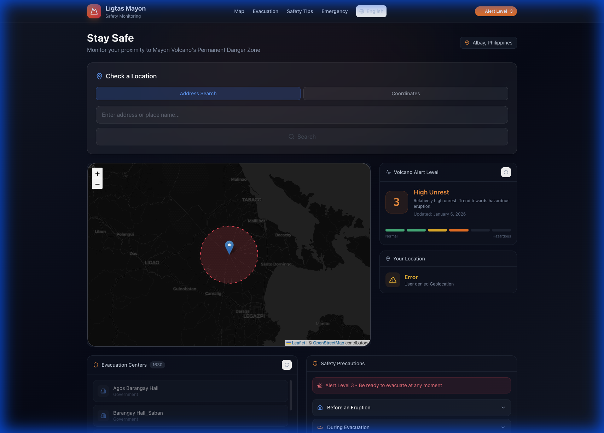

A life-saving geospatial platform designed to protect the communities surrounding Mayon Volcano.
Residents of Albay face constant risks from Mayon Volcano's activity. During heightened alert levels, accessing accurate, real-time information about danger zones and evacuation centers can be life or death. Traditional methods of communication are often too slow or difficult to access on the move.
CodeHarana developed Ligtas Mayon, a high-performance web application optimized for emergency situations. Leveraging Next.js for speed and Leaflet.js for interactive mapping, the tool provides residents with an immediate visual of the 6km Permanent Danger Zone (PDZ) and their current proximity to it.
Since its deployment, Ligtas Mayon has been utilized by thousands of local residents during Alert Level 3 periods. It has become a primary resource for local government units (LGUs) to disseminate evacuation paths and safety protocols quickly.
Let's discuss how we can bring your vision to life.